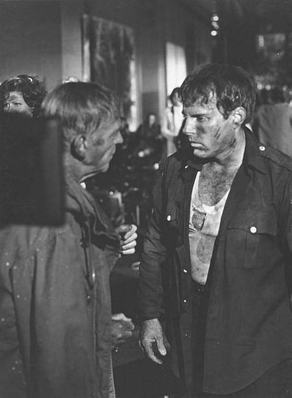

Ernie F. Orsatti
Born Beverly Hills Feb 13, 1940; died La Quinta Sept 12, 2020.
Nicknamed ‘The Legend,’ he was the son of Cardinals player and agent Ernie Orsatti and opera singer Inez Gorman. A Foster Grant model and swimmer trained under Johnny Weissmuller, he also pursued baseball: he was scouted by the Dodgers out of high school and played outfield for Los Angeles Valley College by 1961.
He entered the film industry at sixteen and appeared as an actor in The Green Berets (1968), The Mechanic (1972) and The Towering Inferno (1974), where he played the firefighter hanging on to Steve McQueen outside the scenic glass elevator. His defining Poseidon Adventure fall has its own timeline story rather than being retold here.
Over his career he accumulated some 140 stunt credits, including three Death Wish films, Hot Shots!, Alien: Resurrection and American History X. Television work included NYPD Blue and Charmed; his son Noon later took over Charmed’s stunts. His later coordination work included 18 episodes of It’s Always Sunny in Philadelphia (2006–08), Big Love and Furry Vengeance (2010). He earned his DGA card on Underground Aces (1981) and won Best Stunt Coordinator for a feature film for Death Wish 3 at the 1986 Stunt Man Awards, sharing the category with Gary McLarty.
Credits in the archive (151)
- 1968 The Acid Eaters Ollie
- 1968 The Green Berets Stunts · Actor: Sgt. Don Ross
- 1971 Star Spangled Girl Stunts
- 1972 The Mechanic Actor: Chicken Lickin driver
- 1972 The Poseidon Adventure Terry (actor) – performed the famous 32-ft skylight fall
- 1973 Hawkins TV as Sonny Bartlow · 1 episode
- 1973 The Last American Hero Davie Baer
- 1973 The Stone Killer Stunts
- 1974 The Towering Inferno Stunts – firefighter hanging on to Steve McQueen outside the scenic elevator · Actor: Mark Powers
- 1975 Night Moves Stunts
- 1976 Sky Riders Actor (Joe) · Stunt Coordinator
- 1977 The Car Actor: Dalton
- 1977 Viva Knievel! Norman Clark
- 1978 The Swarm Duty Officer
- 1979 The Incredible Hulk TV as Phil Haze · 1 episode
- 1980 Defiance 2nd Cop
- 1981 The Greatest American Hero TV as Bob Baron · 1 episode
- 1981 Underground Aces Stunt Coordinator
- 1982 Dead Men Don't Wear Plaid Stunt Coordinator
- 1982 Death Wish II Stunt Coordinator
- 1982 Remington Steele TV Stunt Coordinator · 94 episodes
- 1982 The Entity Stunts
- 1983 10 to Midnight Stunt Coordinator
- 1983 D.C. Cab Stunts
- 1984 Hill Street Blues TV as Cop · 1 episode
- 1984 The Evil That Men Do Stunt Coordinator
- 1985 A Reason to Live Stunt Coordinator
- 1985 Alice in Wonderland TV as Bill · 1 episode
- 1985 Badge of the Assassin Second Unit Director
- 1985 Death Wish 3 Stunt Coordinator
- 1985 Falcon Crest TV as Hood · 1 episode
- 1985 Mischief Stunts
- 1986 Hoosiers Stunt Coordinator
- 1986 Murphy's Law Stunts · Stunt Coordinator
- 1987 Carly's Web Second Unit Director
- 1987 Death Wish 4: The Crackdown Stunt Coordinator
- 1987 Like Father Like Son Stunt Coordinator
- 1987 Murder by the Book Stunt Coordinator
- 1987 Winners Take All Second Unit Director
- 1988 I'm Gonna Git You Sucka Stunts
- 1988 Messenger of Death Stunt Coordinator
- 1988 Phantasm II Stunts
- 1988 Police Story: Burnout Stunt Coordinator
- 1989 Blind Fury Stunts
- 1989 Kinjite: Forbidden Subjects Stunt Coordinator
- 1990 Almost an Angel Stunts
- 1990 Donor Stunt Coordinator
- 1990 Fatal Charm Stunt Coordinator
- 1990 Ghost Dad Stunts
- 1990 Night of the Wilding Stunts
- 1990 Opportunity Knocks Stunt coord
- 1990 The Gumshoe Kid Stunts
- 1990 Welcome Home, Roxy Carmichael Stunt Coordinator
- 1991 Another You Stunt Coordinator
- 1991 Hot Shots! Stunt Coordinator
- 1991 L.A. Law TV Stunt Coordinator
- 1991 The Taking of Beverly Hills Stunts
- 1992 Into the Sun Stunt Coordinator
- 1992 Picket Fences TV Stunt Coordinator
- 1992 Red Shoe Diaries TV Stunt Coordinator (entire series)
- 1993 Grumpy Old Men Stunt Coordinator · Second Unit Director
- 1993 Hot Shots! Part Deux Stunt Coordinator · Second Unit Director
- 1993 NYPD Blue TV Stunts · Stunt Coordinator
- 1993 Sister Act 2: Back in the Habit Second Unit Director
- 1993 Surf Ninjas Stunt Coordinator
- 1994 Airheads Stunt Coordinator
- 1994 Andre Second Unit Director
- 1994 Flashfire Stunt Coordinator
- 1994 In the Best of Families: Marriage, Pride & Madness Second Unit Director
- 1994 Lily in Winter Stunt Coordinator
- 1994 Shattered Image Stunts
- 1995 Coldblooded Stunt Coordinator
- 1995 Perfect Alibi Stunt Coordinator
- 1995 Problem Child 3 Stunt Coordinator
- 1995 Tall Tale Stunt Coordinator · Second Unit Director
- 1995 The Presidents of the United States of America: Peaches Music Video Stunt Coordinator
- 1995 Theodore Rex Second unit director
- 1995 Unstrung Heroes Stunts
- 1996 A Friend's Betrayal Stunt Coordinator
- 1996 Crime of the Century Stunts
- 1996 Don't Look Back Stunt Coordinator
- 1996 Ed Stunt Coordinator
- 1996 Larger Than Life Second unit director
- 1996 One Fine Day Stunt Coordinator
- 1996 Primal Fear Stunt Coordinator
- 1996 Profiler TV Stunt coordinator (19 eps, 1996–1998)
- 1996 Sgt. Bilko Stunt Coordinator
- 1996 The Pretender TV Stunt coordinator (all 4 seasons, ~86 eps, 1996–2000)
- 1996 The Truth About Cats & Dogs Stunt Coordinator
- 1996 The Ultimate Lie Stunt Coordinator
- 1996 To Gillian on Her 37th Birthday Stunt Coordinator
- 1996 Tremors 2: Aftershocks Stunts
- 1996 Unlikely Angel Stunt Coordinator
- 1997 A Nightmare Come True Stunt Coordinator
- 1997 Alien Resurrection Stunt Coordinator
- 1997 City of Industry Second unit director
- 1997 Friends 'Til the End Stunt Coordinator
- 1997 Just Write Stunt Driver
- 1997 The Love Bug Stunt Coordinator
- 1997 The Practice TV Stunt coordinator (1 ep, 2002)
- 1997 Trial and Error Stunt Coordinator
- 1998 Ally McBeal TV Second Unit Director (1 episode)
- 1998 American History X Stunt Coordinator
- 1998 CHiPs '99 Stunt Coordinator
- 1998 Cab to Canada Stunt Coordinator
- 1998 Charmed TV Stunt Coordinator · 37 episodes (seasons 1–2)
- 1998 Doctor Dolittle Second unit director
- 1998 Fallen Stunts · Stunt Coordinator
- 1998 Fear and Loathing in Las Vegas Stunts
- 1998 Mafia! (Jane Austen's Mafia!) Second unit director · Stunt Coordinator
- 1998 Pleasantville Stunt Coordinator
- 1998 Thirst Stunt Coordinator
- 1999 My Favorite Martian Stunt Coordinator
- 1999 Simpatico Stunt Coordinator
- 2000 Big Momma's House Stunt Coordinator
- 2000 Going Home Stunt Coordinator
- 2000 Magicians Stunt Coordinator
- 2000 Men of Honor Second unit director
- 2000 Miracle in Lane 2 Stunt Coordinator
- 2000 Picking Up the Pieces Stunt Coordinator
- 2001 Black Knight Second unit director
- 2001 Corky Romano Stunt Coordinator
- 2001 Crocodile Dundee in Los Angeles Stunt Coordinator
- 2001 Joe Dirt Stunt Coordinator
- 2002 Frank McKlusky, C.I. Stunt Coordinator
- 2003 Carnivàle TV Stunt coordinator (24 eps, 2003–2005)
- 2003 Carolina Stunt Coordinator
- 2003 Cheaper by the Dozen Stunt Coordinator
- 2003 Cult Culture: The Poseidon Adventure Himself
- 2003 Just Married Stunt Coordinator
- 2003 The League of Extraordinary Gentlemen Stunt Coordinator · Second Unit Director
- 2004 Christmas with the Kranks Stunt Coordinator
- 2004 Club Dread Second unit director
- 2004 Entourage TV Stunt coordinator (5 eps, 2004–2007)
- 2004 In Good Company Stunt Coordinator
- 2004 Welcome to Mooseport Stunt Coordinator
- 2005 Happy Endings Stunts
- 2005 The Closer TV Stunt Coordinator · 5 episodes
- 2005 The Third Vehicle Stunts
- 2005 Yours, Mine & Ours Stunt coordinator
- 2006 It's Always Sunny in Philadelphia TV Stunt coordinator (18 eps, 2006–2008)
- 2006 Nip/Tuck TV Stunt Coordinator
- 2006 The Pink Panther Second unit director: stunt unit
- 2007 5 Minutes to Midnight Stunt Coordinator (short)
- 2007 State of Mind TV Stunt Coordinator
- 2008 Made of Honor Stunt coordinator
- 2008 Strange Wilderness Stunt coordinator
- 2009 Big Love TV Stunt director/coordinator (9 eps)
- 2009 The Pink Panther 2 Stunt coordinator
- 2010 Furry Vengeance Stunt coordinator
- 2011 Just Peck Stunt Coordinator
On the timeline
Scouted by the Dodgers
Baseball ran in the family. Right out of high school, Ernie F. Orsatti was scouted by the Los Angeles Dodgers. By 1961 he was patrolling the outfield for the Los Angeles Valley College Monarchs, where the Valley Times singled him out as the son of the former major league star – Ernie Orsatti Sr., who played for the St. Louis Cardinals from 1927 to 1935 and won two World Series titles.
"We've all come to watch you die."
Ernie F. Orsatti was cast as an actor in The Poseidon Adventure, playing Terry, the boyfriend of Pamela Sue Martin's character. The day before the shoot, Irwin Allen told him he wanted him to do the fall. "I'm not a stuntman," Ernie said. He did it anyway: hanging from an upside-down table, letting go, and dropping 32 feet onto his back through the ballroom skylight. Paul Stader's only advice: "Pick a point, look at it and let go." It knocked him "colder than a cucumber," and they got it in one take. Gene Hackman and Ernest Borgnine came in on their day off with their families. "We've all come to watch you die," Hackman told him, and took pictures. Afterwards, Ernie said, nobody called him an actor again: "you're the guy who did the stunt in The Poseidon Adventure, you're a stuntman – I wish I'd found that out years earlier because I'd be richer."
Through the window on Hill Street Blues
Ernie F. Orsatti was thrown through a window in the Hill Street Blues pilot (1981), the start of three decades coordinating stunts – Hoosiers, Grumpy Old Men, Primal Fear, Fear and Loathing in Las Vegas, Pleasantville, Joe Dirt, Cheaper by the Dozen – and TV from L.A. Law and Picket Fences to Nip/Tuck and Big Love.
Ernie F. earns his DGA card
Ernie F. Orsatti earned his Directors Guild of America card on Underground Aces (1981).
Ernie Orsatti wins Best Stunt Coordinator
At the 2nd Annual Stunt Man Awards, taped March 22, 1986 in Los Angeles before some 500 guests and hosted by Lee Majors, Ernie F. Orsatti won Best Stunt Coordinator for a feature film for Death Wish 3, sharing the category with Gary McLarty (Beverly Hills Cop). Charlton Heston, Chuck Norris, Heather Locklear, Robert Wagner, Ernest Borgnine and David Carradine were among the guests, and Yakima Canutt received the Harvey Parry Lifetime Achievement Award. The show aired in syndication nationwide that spring.
Charmed: a family show
Charmed was a family show. Ernie F. Orsatti coordinated its stunts from the start, Rowbie Orsatti got his first screen credit on it in 1998, and in season 3 Noon Orsatti took over from his father and ran the stunts – and directed second unit – through the 2006 series finale, about 128 episodes. After Charmed ended, Noon turned his focus back to feature films. Eight seasons of witches, demons and weekly fights made Charmed a training ground: Noon brought in performers who were just starting out, and a generation of stunt people launched their careers on his set.
Sources: imdb.com · hollywoodreporter.com · televisionacademy.com · variety.com · Orsatti family · calisphere.org · UPI Archives, March 23, 1986, "The categories and individual winners in the second annual Stuntman Awards" (lists Best Stunt Coordinator, Film: Gary McLarty for Beverly Hills Cop; Ernie Orsatti for Deathwish 3): https://www.upi.com/Archives/1986/03/23/The-categories-and-individual-winners-in-the-second-annual/4530511938000 · UPI Archives, March 24, 1986, "Stunt men and women honored" (spelled "Ernie Orsati"): https://www.upi.com/Archives/1986/03/24/Stunt-men-and-women-honored/1695512024400/